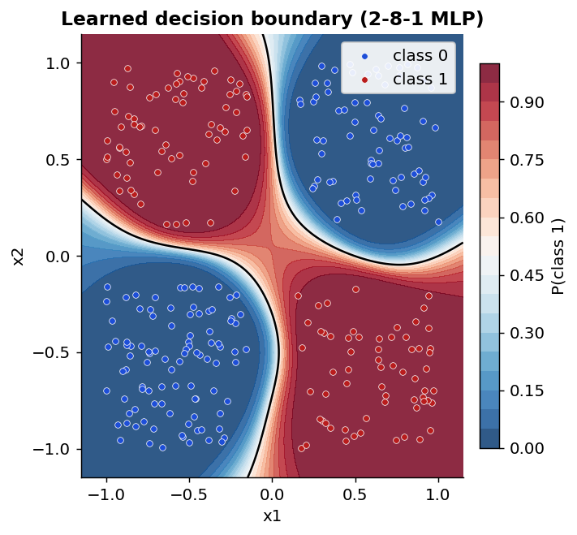
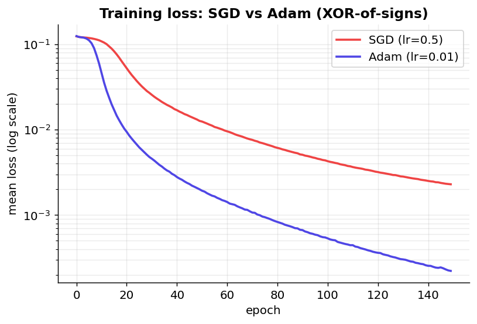
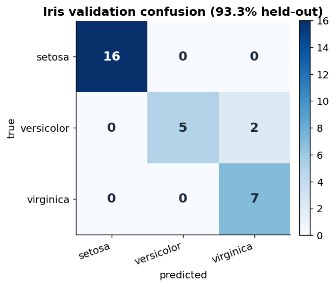

A tiny neural-network library written entirely in C — a flat
Matrix type, hand-derived backpropagation, Adam, and a
multi-class softmax classifier, all in explicit loops and raw pointers.
Everything is built on one contiguous, row-major matrix — no BLAS, no framework.
Flat double* Matrix: multiply, add, transpose, random init — explicit loops & pointer arithmetic.
Stackable layers, sigmoid / tanh / ReLU / softmax, full chain-rule backpropagation.
Analytic gradients checked against finite differences to ~1e-10.
Mini-batch SGD & Adam, CSV datasets, train/validation split, model save/load.
How the pieces fit together.
flowchart TD
subgraph core["Linear algebra core"]
M["Matrix
rows · cols · double* data"]
OPS["mat_mul · mat_add
mat_transpose · activations"]
end
M --> OPS
OPS --> L["Layer
W · b · activation
+ grad / Adam caches"]
L --> NET["Network
stack of Layers"]
NET --> FWD["net_forward
z = Wx+b → a = act(z)"]
NET --> BWD["net_backprop
δ propagated backward"]
FWD --> LOSS["net_loss
squared error / cross-entropy"]
LOSS --> BWD
BWD --> OPT["net_step / Adam
W -= lr·∂L/∂W"]
OPT --> NET
From a CSV file to a held-out accuracy number.
Generated by the C library itself (a small client links ml_lib and dumps the data).



memory leaks — valgrind & MSVC CRT heap verified
CI toolchains green on every push (gcc·make·valgrind, CMake·ctest, MSVC)
self-checking demos that double as the smoke test
compiles clean with full warnings, C11, no dependencies